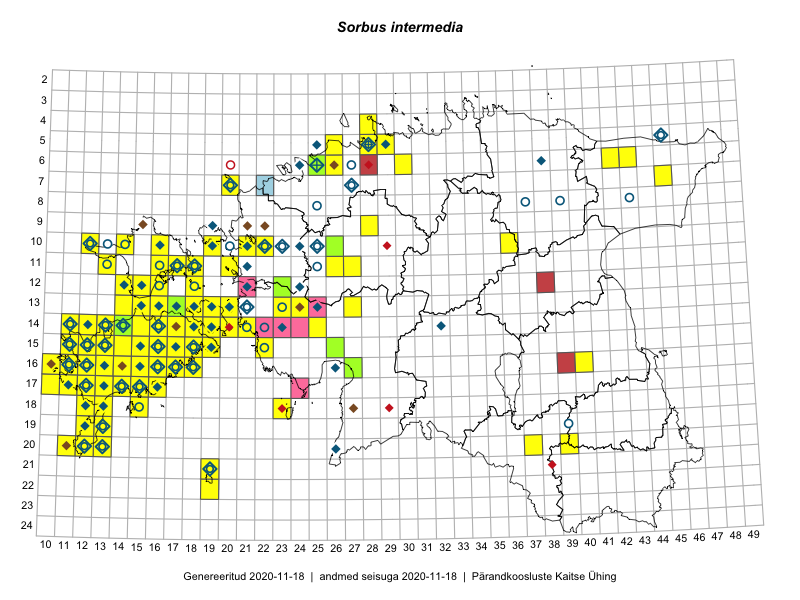

Sorbus intermedia
Uuendatud: 2016-12-07
Kaardile koondatud taksonid: Sorbus intermedia (Ehrh.) Pers.

Kaart põhineb 196 vaatlusel. Taime on leitud 84 ruudust.
| Ruut | Vaatleja(d) | Vaatlusaeg | Kirje tüüp | Viide andmebaasikirjele |
|---|---|---|---|---|
| 14-17 | Toomas Kukk, Thea Kull, Timo Luhamäe, Ott Luuk, Peedu Saar | 2015-06-29 | ruut/ala | vaata PlutoFis |
| 14-15 | Toomas Kukk, Eerik Leibak | 2015-08-09 | ruut/ala | vaata PlutoFis |
| 20-11 | Toomas Kukk, Peedu Saar | 2015-08-05 | ruut/ala | vaata PlutoFis |
| 13-14 | Toomas Kukk, Eerik Leibak | 2015-08-10 | ruut/ala | vaata PlutoFis |
| 13-15 | Toomas Kukk, Eerik Leibak | 2015-08-10 | ruut/ala | vaata PlutoFis |
| 17-28 | Peedu Saar, Liina Oja | 2015-06-09 | ruut/ala | vaata PlutoFis |
| 16-10 | Toomas Kukk | 2014-06-21 | ruut/ala | vaata PlutoFis |
| 16-12 | Toomas Kukk, Mari Reitalu | 2014-06-20 | ruut/ala | vaata PlutoFis |
| 17-12 | Toomas Kukk, Mari Reitalu | 2014-06-20 | ruut/ala | vaata PlutoFis |
| 15-19 | Toomas Kukk | 2014-06-17 | ruut/ala | vaata PlutoFis |
| 19-13 | Toomas Kukk | 2014-06-18 | ruut/ala | vaata PlutoFis |
| 06-43 | Tiit Hallikma, Toomas Kukk | 2015-05-30 | ruut/ala | vaata PlutoFis |
| 10-16 | Thea Kull | 2015-06-15 | ruut/ala | vaata PlutoFis |
| 07-45 | Ott Luuk, Hannes Pehlak | 2015-07-22 | ruut/ala | vaata PlutoFis |
| 14-16 | Ott Luuk, Elle Roosaluste, Jaak-Albert Metsoja | 2015-06-15 | ruut/ala | vaata PlutoFis |
| 16-17 | Peedu Saar | 2015-09-07 | ruut/ala | vaata PlutoFis |
| 16-11 | Peedu Saar, Ott Luuk | 2015-10-14 | ruut/ala | vaata PlutoFis |
| 16-17 | Meeli Mesipuu, Kadri Tali | 2015-07-06 | ruut/ala | vaata PlutoFis |
| 16-18 | Meeli Mesipuu, Kadri Tali | 2015-07-06 | ruut/ala | vaata PlutoFis |
| 13-17 | Meeli Mesipuu, Kadri Tali | 2015-07-08 | ruut/ala | vaata PlutoFis |
| 14-16 | Meeli Mesipuu | 2015-07-10 | ruut/ala | vaata PlutoFis |
| 13-16 | Meeli Mesipuu | 2015-07-09 | ruut/ala | vaata PlutoFis |
| 18-23 | Ott Luuk, Elle Roosaluste | 2015-05-29 | ruut/ala | vaata PlutoFis |
| 15-22 | Indrek Tammekänd, Jana Galadi | 2015-06-03 | ruut/ala | vaata PlutoFis |
| 10-12 | Eeva-Maria Jeletsky, Tarmo Niitla | 2015-06-26 | ruut/ala | vaata PlutoFis |
| 11-17 | Eeva-Maria Jeletsky, Tarmo Niitla | 2015-06-17 | ruut/ala | vaata PlutoFis |
| 12-14 | Eeva-Maria Jeletsky, Tarmo Niitla | 2015-06-25 | ruut/ala | vaata PlutoFis |
| 17-13 | Triin Reitalu, Mari Reitalu | 2015-05-18 | ruut/ala | vaata PlutoFis |
| 19-13 | Oliver Parrest | 2015-07-01 | ruut/ala | vaata PlutoFis |
| 15-11 | Triin Reitalu, Mari Reitalu | 2015-06-29 | ruut/ala | vaata PlutoFis |
| 16-13 | Mari Reitalu | 2015-08-29 | ruut/ala | vaata PlutoFis |
| 16-11 | Mari Reitalu | 2015-05-22 | ruut/ala | vaata PlutoFis |
| 15-11 | Mari Reitalu | 2014-05-14 | ruut/ala | vaata PlutoFis |
| 15-11 | Mari Reitalu | 2014-05-18 | ruut/ala | vaata PlutoFis |
| 15-12 | Mari Reitalu | 2014-07-31 | ruut/ala | vaata PlutoFis |
| 20-11 | Mari Reitalu, Triin Reitalu | 2014-08-15 | ruut/ala | vaata PlutoFis |
| 05-28 | Erkki Otsman, Sergei Smirnov | 2015-06-26 | ruut/ala | vaata PlutoFis |
| 17-12 | Mari Reitalu | 2014-09-02 | ruut/ala | vaata PlutoFis |
| 17-10 | Mari Reitalu, Triin Reitalu | 2015-05-10 | ruut/ala | vaata PlutoFis |
| 16-14 | Sirje Azarov, Aira Alasi | 2015-05-01 | ruut/ala | vaata PlutoFis |
| 17-12 | Mari Reitalu | 2015-06-19 | ruut/ala | vaata PlutoFis |
| 15-11 | Mari Reitalu, Triin Reitalu | 2015-04-25 | ruut/ala | vaata PlutoFis |
| 14-12 | Mari Reitalu, Triin Reitalu | 2015-05-24 | ruut/ala | vaata PlutoFis |
| 15-12 | Mari Reitalu, Triin Reitalu | 2015-05-24 | ruut/ala | vaata PlutoFis |
| 17-12 | Mari Reitalu | 2015-06-07 | ruut/ala | vaata PlutoFis |
| 19-13 | Oliver Parrest | 2015-05-20 | ruut/ala | vaata PlutoFis |
| 05-29 | Erkki Otsman, Sergei Smirnov | 2015-07-12 | ruut/ala | vaata PlutoFis |
| 17-14 | Mari Reitalu, Sirje Azarov | 2015-05-12 | ruut/ala | vaata PlutoFis |
| 17-14 | Mari Reitalu, Sirje Azarov | 2015-05-09 | ruut/ala | vaata PlutoFis |
| 20-13 | Mari Reitalu, Oliver Parrest | 2015-05-26 | ruut/ala | vaata PlutoFis |
| 16-12 | Mari Reitalu | 2015-08-23 | ruut/ala | vaata PlutoFis |
| 19-12 | Oliver Parrest | 2015-08-18 | ruut/ala | vaata PlutoFis |
| 14-20 | Meeli Mesipuu, Kadri Tali | 2015-06-26 | ruut/ala | vaata PlutoFis |
| 16-12 | Mari Reitalu | 2015-06-16 | ruut/ala | vaata PlutoFis |
| 16-12 | Mari Reitalu | 2015-06-10 | ruut/ala | vaata PlutoFis |
| 16-12 | Mari Reitalu, Triin Reitalu | 2015-07-03 | ruut/ala | vaata PlutoFis |
| 17-13 | Mari Reitalu, Oliver Parrest | 2015-08-04 | ruut/ala | vaata PlutoFis |
| 17-13 | Mari Reitalu, Oliver Parrest | 2015-08-12 | ruut/ala | vaata PlutoFis |
| 14-13 | Mari Reitalu, Oliver Parrest | 2015-05-14 | ruut/ala | vaata PlutoFis |
| 14-13 | Mari Reitalu, Oliver Parrest | 2015-07-21 | ruut/ala | vaata PlutoFis |
| 15-12 | Mari Reitalu, Oliver Parrest | 2015-07-14 | ruut/ala | vaata PlutoFis |
| 13-18 | Meeli Mesipuu, Kadri Tali | 2015-06-25 | ruut/ala | vaata PlutoFis |
| 15-12 | Mari Reitalu, Oliver Parrest | 2015-07-21 | ruut/ala | vaata PlutoFis |
| 16-13 | Mari Reitalu, Oliver Parrest | 2015-05-22 | ruut/ala | vaata PlutoFis |
| 16-13 | Mari Reitalu, Oliver Parrest | 2015-07-27 | ruut/ala | vaata PlutoFis |
| 18-12 | Mari Reitalu, Oliver Parrest | 2015-05-22 | ruut/ala | vaata PlutoFis |
| 18-12 | Mari Reitalu, Sirje Azarov, Oliver Parrest | 2015-08-02 | ruut/ala | vaata PlutoFis |
| 15-13 | Mari Reitalu, Oliver Parrest | 2015-05-14 | ruut/ala | vaata PlutoFis |
| 17-10 | Mari Reitalu, Oliver Parrest | 2015-08-04 | ruut/ala | vaata PlutoFis |
| 15-11 | Mari Reitalu, Oliver Parrest | 2015-07-14 | ruut/ala | vaata PlutoFis |
| 20-11 | Mari Reitalu, Oliver Parrest | 2015-05-26 | ruut/ala | vaata PlutoFis |
| 14-12 | Mari Reitalu, Oliver Parrest | 2015-07-14 | ruut/ala | vaata PlutoFis |
| 14-12 | Mari Reitalu, Oliver Parrest | 2015-07-21 | ruut/ala | vaata PlutoFis |
| 17-12 | Mari Reitalu, Triin Reitalu | 2015-05-05 | ruut/ala | vaata PlutoFis |
| 17-12 | Mari Reitalu, Triin Reitalu | 2015-07-22 | ruut/ala | vaata PlutoFis |
| 21-19 | Oliver Parrest | 2015-05-29 | ruut/ala | vaata PlutoFis |
| 14-11 | Mari Reitalu, Triin Reitalu | 2015-05-24 | ruut/ala | vaata PlutoFis |
| 22-19 | Oliver Parrest | 2015-05-29 | ruut/ala | vaata PlutoFis |
| 14-16 | Mari Reitalu, Sirje Azarov | 2015-05-09 | ruut/ala | vaata PlutoFis |
| 18-15 | Oliver Parrest | 2015-05-23 | ruut/ala | vaata PlutoFis |
| 15-11 | Mari Reitalu, Oliver Parrest | 2015-07-16 | ruut/ala | vaata PlutoFis |
| 20-12 | Mari Reitalu, Oliver Parrest | 2015-05-26 | ruut/ala | vaata PlutoFis |
| 16-18 | Mari Reitalu, Sirje Azarov | 2015-05-16 | ruut/ala | vaata PlutoFis |
| 20-12 | Triin Reitalu, Sirje Azarov | 2015-05-30 | ruut/ala | vaata PlutoFis |
| 15-19 | Mari Reitalu, Sirje Azarov | 2015-05-16 | ruut/ala | vaata PlutoFis |
| 18-13 | Mari Reitalu | 2014-06-14 | ruut/ala | vaata PlutoFis |
| 17-14 | Sirje Azarov, Mari Reitalu | 2015-04-27 | ruut/ala | vaata PlutoFis |
| 18-13 | Mari Reitalu, Oliver Parrest | 2015-05-27 | ruut/ala | vaata PlutoFis |
| 16-11 | Mari Reitalu, Triin Reitalu | 2015-05-28 | ruut/ala | vaata PlutoFis |
| 06-43 | Thea Kull, Meeli Mesipuu, Eerik Leibak | 2014-07-09 | ruut/ala | vaata PlutoFis |
| 17-11 | Mari Reitalu, Triin Reitalu | 2015-05-08 | ruut/ala | vaata PlutoFis |
| 16-40 | Karin Kikas, Elle Rajandu | 2015-05-14 | ruut/ala | vaata PlutoFis |
| 16-11 | Triin Reitalu, Mari Reitalu | 2015-08-09 | ruut/ala | vaata PlutoFis |
| 16-10 | Sirje Azarov, Mari Reitalu | 2015-05-22 | ruut/ala | vaata PlutoFis |
| 17-11 | Mari Reitalu, Triin Reitalu | 2015-05-19 | ruut/ala | vaata PlutoFis |
| 16-11 | Sirje Azarov, Mari Reitalu | 2015-05-23 | ruut/ala | vaata PlutoFis |
| 18-13 | Oliver Parrest | 2015-07-15 | ruut/ala | vaata PlutoFis |
| 20-12 | Oliver Parrest | 2015-08-15 | ruut/ala | vaata PlutoFis |
| 20-13 | Oliver Parrest | 2015-08-15 | ruut/ala | vaata PlutoFis |
| 17-11 | Mari Reitalu, Triin Reitalu | 2015-08-05 | ruut/ala | vaata PlutoFis |
| 16-12 | Mari Reitalu | 2015-07-08 | ruut/ala | vaata PlutoFis |
| 16-12 | Mari Reitalu, Triin Reitalu | 2015-04-30 | ruut/ala | vaata PlutoFis |
| 16-10 | Sirje Azarov, Mari Reitalu | 2015-06-22 | ruut/ala | vaata PlutoFis |
| 13-27 | Mari Metsoja, Jaak-Albert Metsoja | 2015-06-10 | ruut/ala | vaata PlutoFis |
| 16-11 | Sirje Azarov, Mari Reitalu | 2015-06-22 | ruut/ala | vaata PlutoFis |
| 16-13 | Sirje Azarov, Aira Alasi | 2015-07-20 | ruut/ala | vaata PlutoFis |
| 10-12 | Meeli Mesipuu | 2015-05-27 | ruut/ala | vaata PlutoFis |
| 16-16 | Sirje Azarov, Aira Alasi | 2015-07-28 | ruut/ala | vaata PlutoFis |
| 14-18 | Karin Kikas, Elle Rajandu | 2015-07-21 | ruut/ala | vaata PlutoFis |
| 15-14 | Karin Kikas, Elle Rajandu | 2015-07-23 | ruut/ala | vaata PlutoFis |
| 11-18 | Meeli Mesipuu, Timo Luhamäe | 2015-05-26 | ruut/ala | vaata PlutoFis |
| 15-15 | Karin Kikas, Elle Rajandu | 2015-07-23 | ruut/ala | vaata PlutoFis |
| 12-16 | Meeli Mesipuu, Timo Luhamäe | 2015-05-28 | ruut/ala | vaata PlutoFis |
| 13-17 | Kadri Tali | 2016-05-24 | ruut/ala | vaata PlutoFis |
| 13-20 | Kadri Tali | 2015-04-15 | ruut/ala | vaata PlutoFis |
| 17-16 | Sirje Azarov, Aira Alasi | 2015-08-17 | ruut/ala | vaata PlutoFis |
| 15-16 | Karin Kikas, Elle Rajandu | 2015-07-23 | ruut/ala | vaata PlutoFis |
| 16-14 | Mari Reitalu | 2014-07-21 | ruut/ala | vaata PlutoFis |
| 15-18 | Karin Kikas, Elle Rajandu | 2015-07-24 | ruut/ala | vaata PlutoFis |
| 16-14 | Karin Kikas, Elle Rajandu | 2015-07-20 | ruut/ala | vaata PlutoFis |
| 17-14 | Karin Kikas, Elle Rajandu | 2015-07-22 | ruut/ala | vaata PlutoFis |
| 17-16 | Kadri Tali | 2015-05-04 | ruut/ala | vaata PlutoFis |
| 06-42 | Eerik Leibak, Jaanus Paal, Uudo Timm | 2015-07-08 | ruut/ala | vaata PlutoFis |
| 13-19 | Kadri Tali | 2015-10-05 | ruut/ala | vaata PlutoFis |
| 13-20 | Kadri Tali | 2015-06-05 | ruut/ala | vaata PlutoFis |
| 10-12 | Meeli Mesipuu, Timo Luhamäe | 2015-05-27 | punkt | vaata PlutoFis |
| 13-19 | Kadri Tali | 2015-06-03 | ruut/ala | vaata PlutoFis |
| 13-24 | Marek Sammul, Ott Luuk | 2014-06-21 | ruut/ala | vaata PlutoFis |
| 11-26 | Thea Kull, Meeli Mesipuu, Eerik Leibak | 2014-06-11 | ruut/ala | vaata PlutoFis |
| 20-11 | Mari Reitalu, Triin Reitalu | 2015-07-19 | ruut/ala | vaata PlutoFis |
| 19-12 | Ott Luuk, Mari Reitalu, Thea Kull | 2014-05-23 | ruut/ala | vaata PlutoFis |
| 05-29 | Peedu Saar, Sander Laherand | 2013-07-07 | ruut/ala | vaata PlutoFis |
| 16-11 | Mari Reitalu, Triin Reitalu | 2015-08-09 | ruut/ala | vaata PlutoFis |
| 10-22 | Tõnu Ploompuu | 2015-08-21 | ruut/ala | vaata PlutoFis |
| 05-28 | Peedu Saar | 2016-05-24 | ruut/ala | vaata PlutoFis |
| 10-21 | Tõnu Ploompuu | 2015-08-21 | ruut/ala | vaata PlutoFis |
| 21-19 | Silvia Pihu | 2015-07-01 | ruut/ala | vaata PlutoFis |
| 14-25 | Thea Kull | 2016-06-21 | ruut/ala | vaata PlutoFis |
| 06-25 | Toomas Kukk, Sander Laherand | 2016-07-05 | ruut/ala | vaata PlutoFis |
| 14-25 | Toomas Kukk, Oliver Parrest | 2016-07-08 | ruut/ala | vaata PlutoFis |
| 06-26 | Tiina Elvisto, Eerik Leibak | 2016-07-04 | ruut/ala | vaata PlutoFis |
| 06-26 | Tiina Elvisto, Eerik Leibak | 2016-07-04 | punkt | vaata PlutoFis |
| 14-21 | Mari Reitalu, Oliver Parrest | 2016-07-04 | ruut/ala | vaata PlutoFis |
| 11-13 | Thea Kull, Peedu Saar | 2016-08-10 | ruut/ala | vaata PlutoFis |
| 17-14 | Toomas Kukk, Meeli Mesipuu, Johannes Kõdar | 2016-08-11 | ruut/ala | vaata PlutoFis |
| 10-14 | Sander Laherand, Toomas Kukk, Nele Jõessar | 2016-08-09 | ruut/ala | vaata PlutoFis |
| 15-16 | Meeli Mesipuu, Maret Gerz | 2016-08-13 | ruut/ala | vaata PlutoFis |
| 10-36 | Karin Kikas, Elle Rajandu | 2016-06-30 | ruut/ala | vaata PlutoFis |
| 05-29 | Toomas Kukk, Sander Laherand | 2016-08-29 | ruut/ala | vaata PlutoFis |
| 11-16 | Toomas Kukk, Thea Kull | 2016-08-08 | ruut/ala | vaata PlutoFis |
| 12-15 | Toomas Kukk, Meeli Mesipuu | 2016-08-10 | ruut/ala | vaata PlutoFis |
| 12-14 | Toomas Kukk, Meeli Mesipuu | 2016-08-10 | ruut/ala | vaata PlutoFis |
| 17-16 | Toomas Kukk, Meeli Mesipuu | 2016-08-12 | ruut/ala | vaata PlutoFis |
| 05-28 | Toomas Kukk, Peedu Saar | 2016-08-03 | ruut/ala | vaata PlutoFis |
| 15-22 | Ulvi Selgis | 2016-09-06 | ruut/ala | vaata PlutoFis |
| 21-19 | Meeli Mesipuu, Ott Luuk | 2016-09-10 | ruut/ala | vaata PlutoFis |
| 22-19 | Ott Luuk, Meeli Mesipuu | 2016-09-10 | ruut/ala | vaata PlutoFis |
| 12-23 | Mari Reitalu, Oliver Parrest | 2016-07-05 | ruut/ala | vaata PlutoFis |
| 13-19 | Mari Reitalu, Sirje Azarov | 2016-08-16 | ruut/ala | vaata PlutoFis |
| 14-14 | Mari Reitalu, Sirje Azarov | 2016-07-26 | ruut/ala | vaata PlutoFis |
| 14-18 | Mari Reitalu, Sirje Azarov | 2016-08-09 | ruut/ala | vaata PlutoFis |
| 14-18 | Mari Reitalu | 2016-08-15 | ruut/ala | vaata PlutoFis |
| 14-19 | Mari Reitalu, Sirje Azarov | 2016-08-18 | ruut/ala | vaata PlutoFis |
| 15-18 | Mari Reitalu, Hannes Pehlak | 2016-08-26 | ruut/ala | vaata PlutoFis |
| 15-19 | Mari Reitalu, Triin Reitalu | 2016-08-14 | ruut/ala | vaata PlutoFis |
| 16-18 | Mari Reitalu, Sirje Azarov | 2016-08-08 | ruut/ala | vaata PlutoFis |
| 18-13 | Mari Reitalu, Sirje Azarov | 2016-07-31 | ruut/ala | vaata PlutoFis |
| 19-13 | Mari Reitalu, Sirje Azarov | 2016-07-31 | ruut/ala | vaata PlutoFis |
| 20-12 | Mari Reitalu, Sirje Azarov | 2016-08-08 | ruut/ala | vaata PlutoFis |
| 20-13 | Mari Reitalu, Sirje Azarov | 2016-08-08 | ruut/ala | vaata PlutoFis |
| 09-28 | Rein Kalamees, Liina Oja | 2016-07-06 | ruut/ala | vaata PlutoFis |
| 20-11 | Meeli Mesipuu | 2016-09-25 | ruut/ala | vaata PlutoFis |
| 15-15 | Meeli Mesipuu | 2016-09-23 | ruut/ala | vaata PlutoFis |
| 13-16 | Peedu Saar, Ott Luuk | 2016-08-31 | ruut/ala | vaata PlutoFis |
| 16-17 | Peedu Saar, Ott Luuk | 2016-09-01 | ruut/ala | vaata PlutoFis |
| 16-14 | Meeli Mesipuu | 2016-09-26 | ruut/ala | vaata PlutoFis |
| 10-19 | Ott Luuk, Meeli Mesipuu | 2016-09-15 | ruut/ala | vaata PlutoFis |
| 17-16 | Ott Luuk, Peedu Saar | 2016-08-30 | ruut/ala | vaata PlutoFis |
| 16-13 | Toomas Kukk, Meeli Mesipuu | 2016-10-05 | ruut/ala | vaata PlutoFis |
| 15-11 | Meeli Mesipuu, Toomas Kukk, Mari Reitalu | 2016-10-07 | ruut/ala | vaata PlutoFis |
| 15-12 | Toomas Kukk, Meeli Mesipuu | 2016-10-08 | ruut/ala | vaata PlutoFis |
| 18-12 | Toomas Kukk, Meeli Mesipuu, Mari Reitalu | 2016-10-07 | ruut/ala | vaata PlutoFis |
| 14-13 | Toomas Kukk, Meeli Mesipuu, Mari Reitalu | 2016-10-06 | ruut/ala | vaata PlutoFis |
| 15-13 | Meeli Mesipuu, Toomas Kukk, Mari Reitalu | 2016-10-06 | ruut/ala | vaata PlutoFis |
| 14-12 | Peedu Saar, Ott Luuk | 2016-10-07 | ruut/ala | vaata PlutoFis |
| 19-13 | Meeli Mesipuu | 2016-06-30 | ruut/ala | vaata PlutoFis |
| 14-11 | Peedu Saar, Ott Luuk | 2016-10-07 | ruut/ala | vaata PlutoFis |
| 17-13 | Ott Luuk, Peedu Saar | 2016-10-08 | ruut/ala | vaata PlutoFis |
| 19-12 | Ott Luuk, Peedu Saar | 2016-10-07 | ruut/ala | vaata PlutoFis |
| 14-17 | Ott Luuk, Peedu Saar | 2016-08-29 | ruut/ala | vaata PlutoFis |
| 14-16 | Ott Luuk, Peedu Saar | 2016-08-31 | ruut/ala | vaata PlutoFis |
| 14-16 | Ott Luuk, Toomas Kukk, Peedu Saar, Sander Laherand | 2016-07-01 | punkt | vaata PlutoFis |
| 06-30 | Kadi-Liis Kesler, Tiina Elvisto | 2015-05-26 | ruut/ala | vaata PlutoFis |
| 17-15 | Meeli Mesipuu, Toomas Kukk, Johannes Kõdar | 2016-08-11 | ruut/ala | vaata PlutoFis |
| 04-28 | Kadi-Liis Kesler, Tiina Elvisto | 2015-08-12 | ruut/ala | vaata PlutoFis |
| 17-11 | Meeli Mesipuu, Virve Sõber | 2012-06-07 | punkt | vaata PlutoFis |